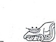
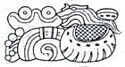
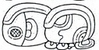
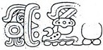
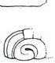
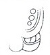
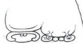
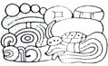
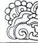
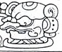

| C1 |  | Haab: [11] Muwan |
| D1 |  | Star-over-shell Dragon-Ha' "war befell Dragon Water" |
| C2 |  | u KAB'-hi "he caused it to be done" |
| D2 |  | Nuun Ujol Chaak |
| E1a |  | [Lok']-yi "he escaped" |
| E1b |  | [B'a-la]-ha |
| F1 |  | [Chan]-na [K'awiil] |
| E2 |  | K'uhul Mutal Ahaw "Holy lord of Mutul" |
| F2a |  | t'ab-yi "he went up" |
| F2b |  | Ch'ak Nah |